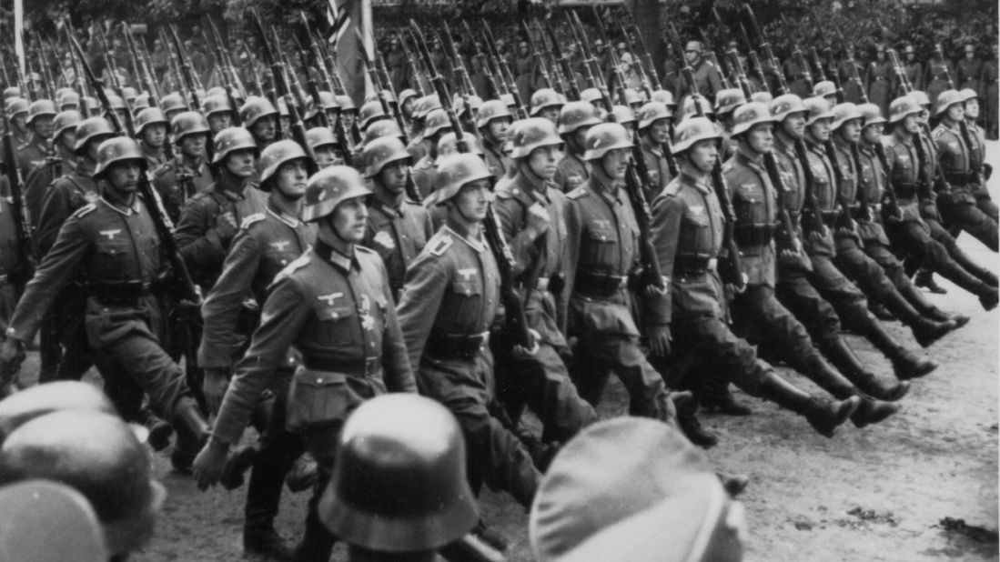

World War II
World War II, often abbreviated as WW II, was a global conflict that lasted from 1939 to 1945. It involved the majority of the world's nations, including all of the great powers, eventually forming two opposing military alliances: the Allies and the Axis. The war is generally considered to have been the deadliest conflict in human history, resulting in an estimated 70–85 million fatalities. It was marked by significant events, including the Holocaust, the bombing of Hiroshima and Nagasaki, and the D-Day invasion. The war ended with the unconditional surrender of the Axis powers and the establishment of the United Nations, aimed at preventing future conflicts of such magnitude.
Artificial Intelligence

Artificial Intelligence (AI) is a field of computer science that focuses on creating machines capable of intelligent behavior. It involves developing algorithms and systems that can perform tasks typically requiring human intelligence, such as understanding natural language, recognizing patterns, solving problems, and making decisions. AI has numerous applications across various industries, including healthcare, finance, transportation, and entertainment. It has the potential to revolutionize how we live and work, making processes more efficient and enabling new innovations. However, it also raises ethical and societal concerns, such as privacy, security, and the impact on employment.
Trucks
Trucks are heavy-duty vehicles designed for transporting goods, materials, and sometimes passengers. They come in various sizes and configurations, from small pickup trucks to large commercial 18-wheelers. Trucks are essential for logistics and transportation industries, facilitating the movement of goods across cities and countries. Monster trucks, on the other hand, are a specialized type of truck characterized by their oversized tires, high ground clearance, and powerful engines. They are primarily used for entertainment in events like monster truck rallies, where they perform stunts, crush smaller vehicles, and navigate obstacle courses. Monster trucks are known for their impressive size, strength, and ability to navigate rough terrain, making them a popular attraction at motorsport events.